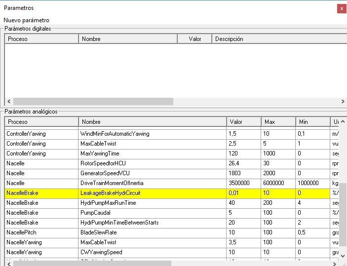

To change the value of a parameter, display the "Parameters" synoptic: in the "Running Simulator xxx" synoptic, press the third button ("Synoptics"): a list will appear, select "Parameters."
Clicking on the column headers will reorder the contents of the table.

Fig. 1.
To change the value of one of these parameters, click on the box corresponding to the "Value" column of the relevant parameter. For example, to change the value of "NacelleBrake.LeakageBrakeHydrCircuit," click on the box with "0.01." The background color will change to blue.
You must click a second time so that the background changes to yellow.
Type in the desired value (within the range indicated by the "Max" and "Min" columns). Then press Enter or move the mouse outside the box.